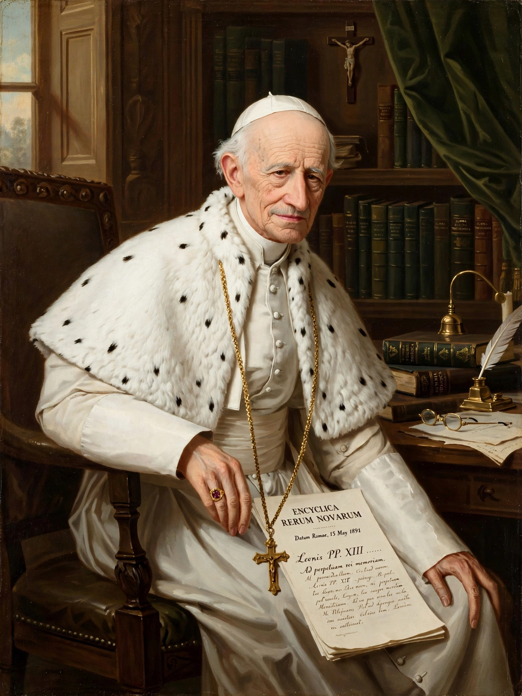

Catholic social teaching
From Wikipedia, the free encyclopedia

Catholic social teaching (CST) is the body of doctrine developed by the Catholic Church on matters of social justice, economic life and the dignity of the human person. It is usually dated from Pope Leo XIII's encyclical Rerum Novarum (1891), which rejected both unregulated capitalism and socialism, defended private property and trade unions, and demanded a just wage.
Principles
CST rests on recurring principles: the inviolable dignity of the person, the common good, Subsidiarity (matters should be handled by the smallest competent authority), Solidarity, the universal destination of goods, the option for the poor, and — in recent teaching — care for creation. These are applied through papal encyclicals, conciliar documents and bishops' conferences.
Development
Milestones include Quadragesimo Anno (1931), Pope John XXIII's Mater et Magistra (1961) and Pacem in Terris (1963), the Second Vatican Council's Gaudium et Spes (1965), Pope Paul VI's Populorum Progressio (1967), Pope John Paul II's Laborem Exercens (1981) and Centesimus Annus (1991), Pope Benedict XVI's Caritas in Veritate (2009) and Pope Francis's Laudato Si' (2015) on the environment and Fratelli Tutti (2020).
Influence
CST shaped the Christian democratic parties of post-war Europe, Catholic trade-union movements and Latin American Liberation theology (in tension with Rome). It continues to inform Catholic positions on migration, war, capital punishment — revised in 2018 to deem the death penalty 'inadmissible' — and economic policy.